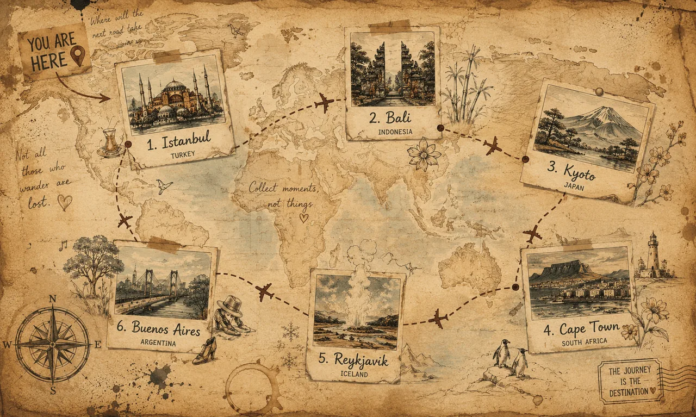
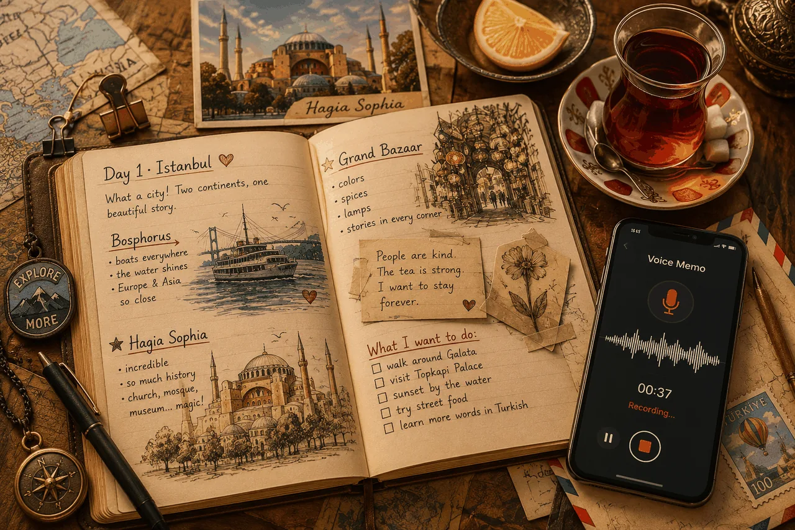
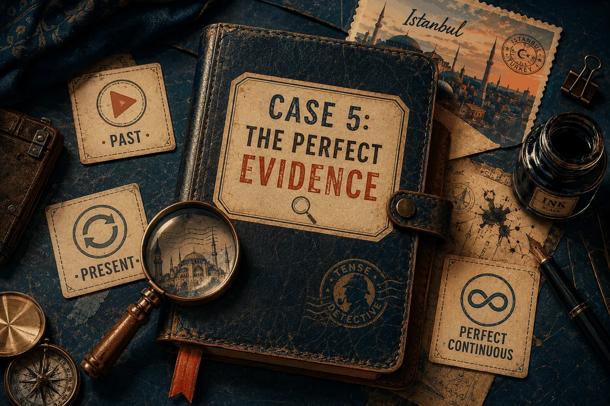
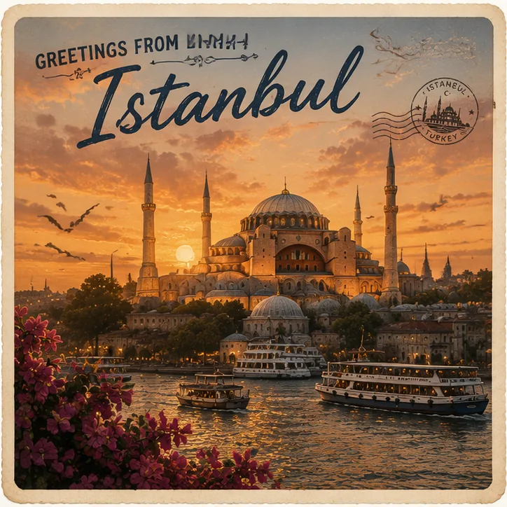
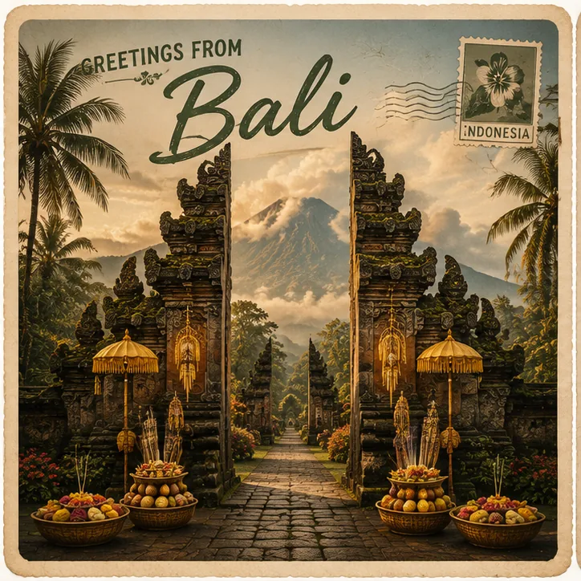
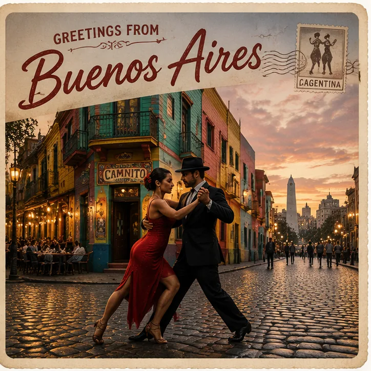

Hey diary!
I have just arrived in Istanbul, and I cannot believe I am finally here. I have been dreaming about this for years.
The taxi driver was so — he showed me exactly where to go.
I have been walking around Sultanahmet for two hours now, and my feet hurt, but I don't care. The are full of people, and there are everywhere with Turkish ads.
I have already visited the Hagia Sophia — it's a that has been standing for fifteen . Can you imagine? Fifteen!
Tonight I'm going to a small café for some Turkish tea. People say the Grand Bazaar is just around the corner. I'll save it for tomorrow — too much for one day.
Yours, Anya 🌙

Day 6 · Marrakech. "We (1) here three days ago. The bazaar (2) the loudest place I have ever heard. I (3) three small treasures already — a brass lantern, mint tea, and a tiny camel. Right now I (4) in a café by the square. A musician (5) the oud for twenty minutes already. I (6) the lamb tagine for the first time today and it was magnificent. The vendor in the bazaar said his grandfather (7) that old map for forty years. Tomorrow we (8) for Cape Town. I (9) my bag already. I (10) a piece of my heart in this city for sure."



Open with structure: In the postcard I can see… · In the foreground there is… · In the background there are…
Push for Perfect tenses (★ today's focus):
→ "Anya has visited this place." · "She has taken a photo of the magnificent temple."
→ "She has been walking here for two hours." · "They have been protecting this island for centuries."
Spice with new vocab: magnificent · charming · bustling · temple · spirit · vast squares · metropolis · entertainment
Close with opinion: I think it is… · I would love to visit because…
I would love to visit ___ because… · The first reason is… · Another reason is…
Hi mum, I have just arrived in… · I have already seen… · I have been walking around…
I have been to ___ twice. · I have seen… · What I loved most was…
For each sentence on the left, write the matching "How long…?" question. Use the right tense.
Bank: for an hour · for twenty minutes · since 2019 · since the 11th century · for ages · all my life. Each phrase is used exactly once. Tap into the box and type the time phrase only (e.g. for ages).
Take three things from your own life. Each one — one sentence in Present Perfect Continuous with for or since. No checker on this one — your job, your life. Example: "I have been studying English since I was seven."
Imagine you're writing back to Anya — but from your own city or any place you choose. Must contain: 2× Present Perfect ("I have arrived…", "I have seen…"), 2× Present Perfect Continuous ("It has been raining…", "I have been walking…"), and at least 3 new words from today (charming · magnificent · temple · spirit · loyalty · etc.).
When you've finished — sign your name, press the button, and send the link to Maria on WhatsApp or Telegram. She'll open it and see exactly what you typed, with the auto-check already done.
Or bring this tab open on your screen to our next lesson — we'll go through together.
Anya has been writing postcards all week. Six countries. Sixteen words. Two tenses. One idea — that a journey isn't where you go, but what you carry back. Now it's your turn to start your postcards.
Anya · NG English · 2026